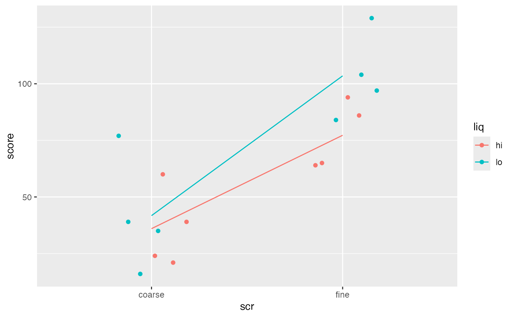

The results from a study comparing different preparation methods for taste test samples.
A data frame with 16 observations on 2 (taste1) or 4
(tastetest) variables.
score taste score from a group of 50 testers
scr a factor with levels
coarse fine
liq a factor with levels hi
lo
type a factor with levels A B
C D
E. Street and M. G. Carroll, Preliminary evaluation of a food product, Statistics: A Guide to the Unknown (Judith M. Tanur et al., eds.), Holden-Day, 1972, pp. 220-238.
The samples were prepared for tasting using either a coarse screen or a fine screen, and with either a high or low liquid content. A total taste score is recorded for each of 16 groups of 50 testers each. Each group had 25 men and 25 women, each of whom scored the samples on a scale from -3 (terrible) to 3 (excellent). The sum of these individual scores is the overall taste score for the group.
data(TasteTest)#> Warning: data set ‘TasteTest’ not founddata(Taste1)#> Warning: data set ‘Taste1’ not foundgf_jitter(score ~ scr, data = TasteTest, color = ~liq, width = 0.2, height =0) %>% gf_line(stat = "summary", group = ~liq)#>df_stats(score ~ scr | liq, data = TasteTest)#> scr liq min Q1 median Q3 max mean sd n missing #> 1 coarse hi 21 23.25 31.5 44.25 60 36.00 17.83255 4 0 #> 2 fine hi 64 64.75 75.5 88.00 94 77.25 15.08587 4 0 #> 3 coarse lo 16 30.25 37.0 48.50 77 41.75 25.55223 4 0 #> 4 fine lo 84 93.75 100.5 110.25 129 103.50 18.91208 4 0